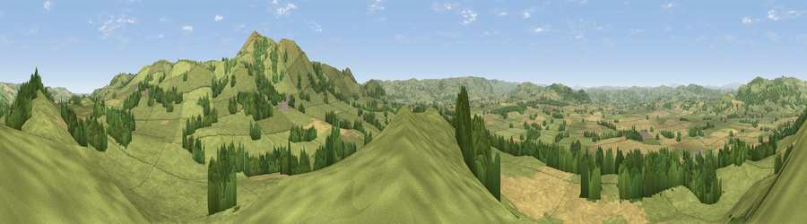

Viewpoint near Priest Weston
#5741 in England · top 19% of its area beats it · near Priest WestonWhere it is
The exact computed spot (SO 27975 98062). Click the marker for map links.
The view, rendered

A 360° render of this exact spot computed from the terrain model, tree cover and land cover — summer colours, afternoon light, calibrated against photographs of famous viewpoints. Real trees, hedges and buildings will differ in detail.
The panorama
Grey silhouette: terrain skyline in each direction (720 bearings, Earth curvature and refraction included). Dashed green: skyline with trees (+15 m) and buildings (+8 m) as obstacles. Blue strip: how far the ground is visible on each bearing.
Where the view opens
Wedge length = distance to the farthest visible ground on that bearing (vegetation-aware). Rings at 10, 25 and 50 km.
What fills the view
67% grassland · 20% cropland · 13% woodland
Angular shares of the visible panorama (visual magnitude), not map area. Landscape diversity 0.38 (0–1 Shannon).
Key numbers
More beautiful places nearby
The staircase of upgrades: each row has a higher view potential than everything closer. Driving times are estimates from straight-line distance, calibrated against real road routing — check an actual route before setting out.
| Place | Direction | Drive | Score |
|---|---|---|---|
| The Knoll | NNE · 1 km | ~2 min | 69.6 |
| Viewpoint near Priest Weston | ENE · 3 km | ~6 min | 71.6 |
| Stapeley Hill | ENE · 4 km | ~8 min | 74.9 |
| Bromlow Callow | NE · 5 km | ~12 min | 76.8 |
| Viewpoint near Lydham | SE · 7 km | ~14 min | 78.6 |
| Viewpoint near Stiperstones | ENE · 10 km | ~19 min | 82.0 |
| Earl's Hill | ENE · 15 km | ~26 min | 82.2 |
| Viewpoint near Asterton | SE · 15 km | ~26 min | 83.0 |
52.57559, -3.06426 · source: screening · position refined by local search. Computed location — check access rights before visiting.